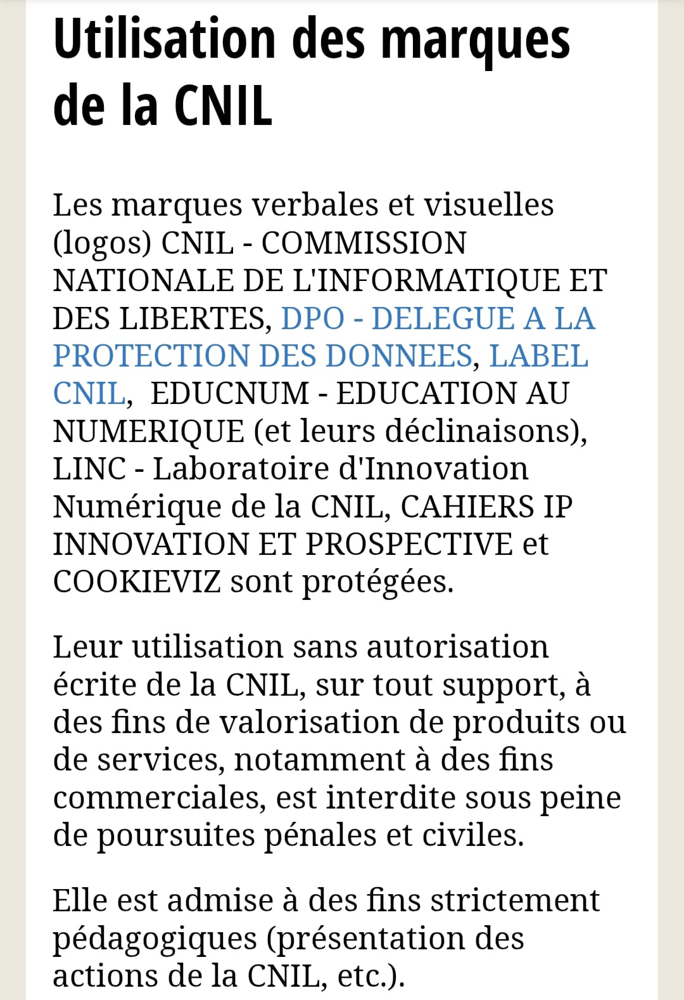
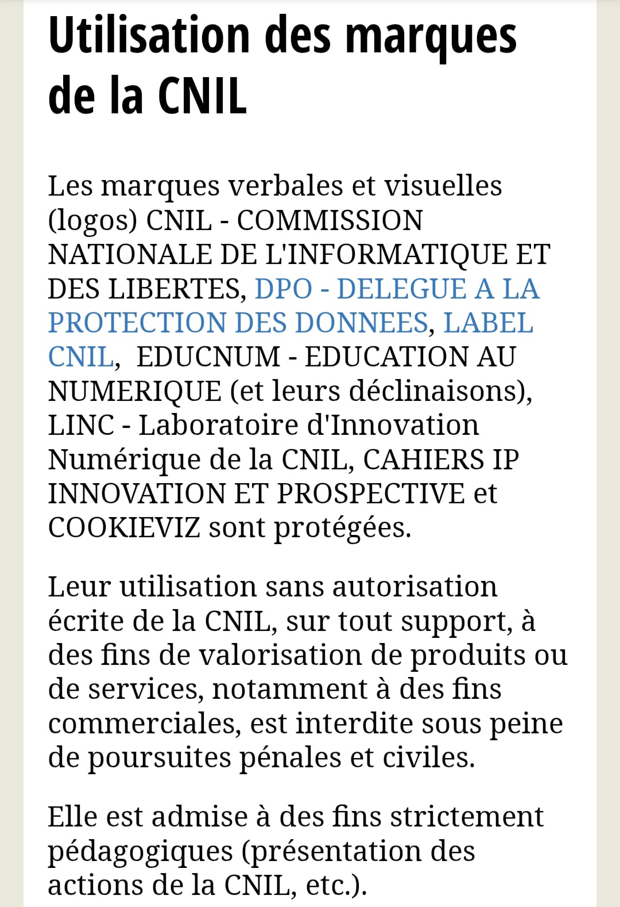

Conformité
J'ai créé cette page de conformité afin de respecter la réglementation en vigueur et d'assurer la transparence concernant l'utilisation des contenus et droits associés à ce portfolio.
La protection des données personnelles est également une priorité. Aucune donnée sensible n'est collectée ou stockée sans consentement explicite. Il est important de rappeler que la divulgation non maîtrisée d'informations personnelles sur Internet peut présenter des risques pour la vie privée et la sécurité des individus. Je m'engage à respecter la confidentialité des visiteurs et à limiter l'usage des données aux stricts besoins du site.
Logo des écoles
Dans le cadre de mon portfolio, j’ai utilisé les logos des écoles MyDigitalSchool, Esicad, et de l'IUT Montpellier. Conformément à la réglementation sur la propriété intellectuelle, j’ai veillé à respecter les droits d’auteur et les conditions d’utilisation du logo.
J’ai pris contact avec les écoles MyDigitalSchool, Esicad, et l'IUT Montpellier afin d’obtenir leur consentement pour l’utilisation de leur logo dans ce portfolio.
Texte sous l'image 1
Texte sous l'image 2

Texte sous l'image 3
Logo Le Grau-du-Roi
Dans le cadre de mon portfolio, j’ai utilisé le logo de la ville du Grau-du-Roi pour illustrer mon projet de stage. Conformément à la réglementation sur la propriété intellectuelle, j’ai veillé à respecter les droits d’auteur et les conditions d’utilisation du logo.
J’ai pris contact avec la mairie du Grau-du-Roi afin d’obtenir leur consentement pour l’utilisation de leur logo dans ce portfolio.
Logo CNIL
Dans le cadre de mon portfolio, j’ai utilisé le logo de la CNIL pour illustrer mon projet de stage. Conformément à la réglementation sur la propriété intellectuelle, j’ai veillé à respecter les droits d’auteur et les conditions d’utilisation du logo.
J’ai pris contact avec la CNIL afin d’obtenir leur consentement pour l’utilisation de leur logo dans ce portfolio.
 
